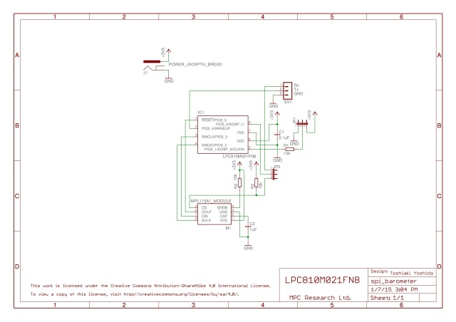
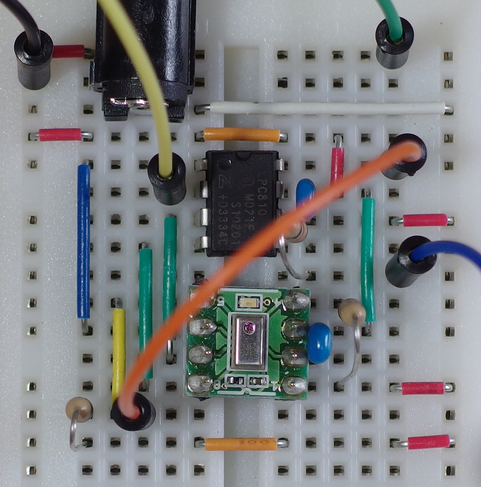

Read a barometer.
Hardware


Software
001:
002:
003:
004: <yoshida@mpc.net>
005:
006:
007:
008:
009:
010:
011:
012:
013:
014:
015:
016:
017: <http://www.gnu.org/licenses/>
018:
019:
020: #include <syscon.h>
021: #include <gpio.h>
022: #include <usart.h>
023: #include <mrt.h>
024: #include <nvic.h>
025: #include <spi.h>
026:
027:
028:
029:
030:
031:
032:
033:
034:
035:
036: #define START_CONVERSIONS 0x24
037: #define READ_PRESSURE_MSB 0x80
038: #define READ_PRESSURE_LSB 0x82
039: #define READ_TEMPERATURE_MSB 0x84
040: #define READ_TEMPERATURE_LSB 0x86
041: #define READ_A0_MSB 0x88
042: #define READ_A0_LSB 0x8a
043: #define READ_B1_MSB 0x8c
044: #define READ_B1_LSB 0x8e
045: #define READ_B2_MSB 0x90
046: #define READ_B2_LSB 0x92
047: #define READ_C12_MSB 0x94
048: #define READ_C12_LSB 0x96
049: #define TC 3
050: #define TW 5
051:
052:
053: #define U_PCLK (16 * 115200)
054:
055: volatile int sndbuflen;
056: volatile const int *sndbuf;
057: volatile int rcvbuflen;
058: volatile int *rcvbuf;
059:
060: volatile unsigned int unexpected_rxrdy;
061:
062:
063: static void clock_setup(void)
064: {
065:
066: syscon_enable_pll(SYSCON_IRC, 2, 4);
067:
068:
069: syscon_set_system_clock(SYSCON_PLL_OUT, 1);
070:
071:
072: syscon_set_usart_clock(24000000, U_PCLK);
073: }
074:
075: static void gpio_setup(void)
076: {
077:
078:
079:
080:
081:
082:
083:
084: syscon_enable_clock(SYSCON_IOCON);
085:
086:
087: gpio_config(GPIO_OUTPUT, GPIO_IO, PIO0_10 | PIO0_11);
088: gpio_clear(PIO0_10 | PIO0_11);
089:
090:
091: gpio_config(GPIO_SPI0_SCK, GPIO_HYST, PIO0_2);
092:
093:
094: gpio_config(GPIO_SPI0_MOSI, GPIO_HYST, PIO0_3);
095:
096:
097: gpio_config(GPIO_SPI0_MISO, GPIO_HYST, PIO0_5);
098:
099:
100: gpio_config(GPIO_SPI0_SSEL, GPIO_HYST, PIO0_0);
101:
102:
103: gpio_config(GPIO_U0_TXD, GPIO_HYST, PIO0_4);
104: }
105:
106: static void usart_setup(void)
107: {
108:
109: syscon_enable_clock(SYSCON_UART0);
110:
111:
112: usart_init(USART0, U_PCLK, 115200, 8, 1, USART_PARITY_NONE,
113: USART_FLOW_NONE);
114: }
115:
116: static void mrt_setup(void)
117: {
118:
119: syscon_enable_clock(SYSCON_MRT);
120:
121:
122: mrt_set_mode(MRT0, MRT_ONE_SHOT);
123: }
124:
125: static void spi_setup(void)
126: {
127:
128: syscon_enable_clock(SYSCON_SPI0);
129:
130:
131: nvic_enable_irq(NVIC_SPI0);
132:
133:
134:
135: spi_init_master(SPI0, SPI_MODE0, 3, 0, 0, 0, 0);
136:
137:
138: spi_enable_interrupt(SPI0, SPI_RXRDY);
139: }
140:
141: static void print_hex(int c)
142: {
143: int d;
144:
145: d = (c >> 4) & 0xf;
146: if (d > 9)
147: d += 'a' - 10;
148: else
149: d += '0';
150: usart_send_blocking(USART0, d);
151: d = c & 0xf;
152: if (d > 9)
153: d += 'a' - 10;
154: else
155: d += '0';
156: usart_send_blocking(USART0, d);
157: }
158:
159: static void print_hex_half_word(int w)
160: {
161: print_hex((w >> 8) & 0xff);
162: print_hex(w & 0xff);
163: }
164:
165: static void print_hex_word(int w)
166: {
167: print_hex((w >> 24) & 0xff);
168: print_hex((w >> 16) & 0xff);
169: print_hex((w >> 8) & 0xff);
170: print_hex(w & 0xff);
171: }
172:
173: static void print_int(int d)
174: {
175: bool zerosup;
176: int i;
177:
178: if (d < 0) {
179: usart_send_blocking(USART0, '-');
180: d = -d;
181: }
182: zerosup = true;
183: for (i = 1000000000; i > 0; i /= 10) {
184: if (d / i || i == 1 || !zerosup) {
185: usart_send_blocking(USART0, d / i + '0');
186: d %= i;
187: zerosup = false;
188: }
189: }
190: }
191:
192: static void xprintf(char *p, int arg0, int arg1, int arg2)
193: {
194: int arg[3];
195: int i;
196:
197: arg[0] = arg0;
198: arg[1] = arg1;
199: arg[2] = arg2;
200: i = 0;
201: while (*p != '\0') {
202: if (*p == '%') {
203: switch (*++p) {
204: case '%':
205: usart_send_blocking(USART0, *p++);
206: break;
207: case 'x':
208: if (i < 3)
209: print_hex(arg[i++]);
210: p++;
211: break;
212: case 'h':
213: if (i < 3)
214: print_hex_half_word(arg[i++]);
215: p++;
216: break;
217: case 'w':
218: if (i < 3)
219: print_hex_word(arg[i++]);
220: p++;
221: break;
222: case 'd':
223: if (i < 3)
224: print_int(arg[i++]);
225: p++;
226: break;
227: default:
228: usart_send_blocking(USART0, '?');
229: p++;
230: break;
231: }
232: } else {
233: usart_send_blocking(USART0, *p++);
234: }
235: }
236: }
237:
238: static void xputs(char *p)
239: {
240: while (*p != '\0')
241: usart_send_blocking(USART0, *p++);
242: usart_send_blocking(USART0, '\r');
243: usart_send_blocking(USART0, '\n');
244: }
245:
246: static void delay_ms(int ms)
247: {
248: mrt_set_interval(MRT0, 24000000 / 1000 * ms);
249:
250: while (!mrt_get_channel_status(MRT0, MRT_INT))
251: ;
252:
253: mrt_clear_channel_status(MRT0, MRT_INT);
254: }
255:
256: void spi0_isr(void)
257: {
258: int m;
259: int s;
260:
261:
262: m = spi_get_interrupt_mask(SPI0, SPI_TXRDY | SPI_RXRDY);
263:
264:
265: s = spi_get_interrupt_status(SPI0, SPI_TXRDY | SPI_RXRDY);
266:
267:
268: if (m & s & SPI_TXRDY) {
269: if (sndbuflen) {
270:
271: spi_send_control(SPI0, *sndbuf, 8, *sndbuf);
272: sndbuf++;
273: sndbuflen--;
274: } else {
275:
276: spi_disable_interrupt(SPI0, SPI_TXRDY);
277: }
278: }
279:
280:
281: if (m & s & SPI_RXRDY) {
282: if (rcvbuflen) {
283:
284: *rcvbuf++ = spi_recv(SPI0);
285: rcvbuflen--;
286: } else {
287:
288: spi_recv(SPI0);
289: unexpected_rxrdy++;
290: }
291: }
292: }
293:
294:
295: static short calc_pcomp(unsigned short padc, unsigned short tadc,
296: short a0, short b1, short b2, short c12)
297: {
298: int c12x2;
299: int a1;
300: int a1x1;
301: int y1;
302: int a2x2;
303: int pcomp;
304:
305:
306:
307:
308:
309:
310:
311:
312: c12x2 = (c12 * tadc) >> 11;
313:
314:
315:
316: a1 = b1 + c12x2;
317:
318:
319: a1x1 = a1 * padc;
320:
321:
322:
323: y1 = (a0 << 10) + a1x1;
324:
325:
326:
327: a2x2 = (b2 * tadc) >> 1;
328:
329:
330:
331: pcomp = (y1 + a2x2) >> 9;
332:
333: return pcomp;
334: }
335:
336: static void print_pressure(int pressure)
337: {
338: int f;
339: int i;
340: static const char frac[16] = {0, 1, 1, 2, 3, 3, 4, 4,
341: 5, 6, 6, 7, 8, 8, 9, 9};
342:
343: f = pressure & 0xf;
344: i = pressure >> 4;
345: xprintf("%d.%d kPa\r\n", i, frac[f], 0);
346: }
347:
348: int main(void)
349: {
350: int buf[8];
351: unsigned short padc;
352: unsigned short tadc;
353: short a0;
354: short b1;
355: short b2;
356: short c12;
357: short pcomp;
358: int pressure;
359: static const int coeff[] = {
360: READ_A0_MSB | SPI_RXIGNORE, 0,
361: READ_A0_LSB | SPI_RXIGNORE, 0,
362: READ_B1_MSB | SPI_RXIGNORE, 0,
363: READ_B1_LSB | SPI_RXIGNORE, 0,
364: READ_B2_MSB | SPI_RXIGNORE, 0,
365: READ_B2_LSB | SPI_RXIGNORE, 0,
366: READ_C12_MSB | SPI_RXIGNORE, 0,
367: READ_C12_LSB | SPI_RXIGNORE, 0,
368: 0 | SPI_RXIGNORE | SPI_EOT
369: };
370: static const int conv[] = {
371: START_CONVERSIONS | SPI_RXIGNORE,
372: 0 | SPI_RXIGNORE | SPI_EOT
373: };
374: static const int press[] = {
375: READ_PRESSURE_MSB | SPI_RXIGNORE, 0,
376: READ_PRESSURE_LSB | SPI_RXIGNORE, 0,
377: READ_TEMPERATURE_MSB | SPI_RXIGNORE, 0,
378: READ_TEMPERATURE_LSB | SPI_RXIGNORE, 0,
379: 0 | SPI_RXIGNORE | SPI_EOT
380: };
381:
382: clock_setup();
383: gpio_setup();
384: usart_setup();
385: mrt_setup();
386: spi_setup();
387:
388: xputs("spi_barometer");
389:
390:
391: delay_ms(TW);
392:
393:
394: sndbuf = coeff;
395: sndbuflen = 17;
396: rcvbuf = buf;
397: rcvbuflen = 8;
398: spi_enable_interrupt(SPI0, SPI_TXRDY);
399: while (rcvbuflen || sndbuflen)
400: ;
401:
402: xprintf("a0=0x%x%x ", buf[0], buf[1], 0);
403: xprintf("b1=0x%x%x ", buf[2], buf[3], 0);
404: xprintf("b2=0x%x%x ", buf[4], buf[5], 0);
405: xprintf("c12=0x%x%x\r\n", buf[6], buf[7], 0);
406:
407: a0 = ((buf[0] & 0xff) << 8) | (buf[1] & 0xff);
408: b1 = ((buf[2] & 0xff) << 8) | (buf[3] & 0xff);
409: b2 = ((buf[4] & 0xff) << 8) | (buf[5] & 0xff);
410: c12 = ((buf[6] & 0xff) << 8) | (buf[7] & 0xff);
411:
412: while (1) {
413:
414: sndbuf = conv;
415: sndbuflen = 2;
416: rcvbuflen = 0;
417: spi_enable_interrupt(SPI0, SPI_TXRDY);
418: while (sndbuflen)
419: ;
420:
421:
422: delay_ms(TC);
423:
424:
425: sndbuf = press;
426: sndbuflen = 9;
427: rcvbuf = buf;
428: rcvbuflen = 4;
429: spi_enable_interrupt(SPI0, SPI_TXRDY);
430: while (rcvbuflen || sndbuflen)
431: ;
432:
433: padc = ((buf[0] & 0xff) << 8) | (buf[1] & 0xff);
434: padc >>= 6;
435: tadc = ((buf[2] & 0xff) << 8) | (buf[3] & 0xff);
436: tadc >>= 6;
437:
438: xprintf("padc=%d tadc=%d\r\n", padc, tadc, 0);
439:
440:
441: pcomp = calc_pcomp(padc, tadc, a0, b1, b2, c12);
442:
443:
444:
445:
446: pressure = ((pcomp * 1041) >> 14) + 800;
447:
448:
449: print_pressure(pressure);
450:
451:
452: delay_ms(1000);
453: }
454:
455: return 0;
456: }
457:
{kind=link}